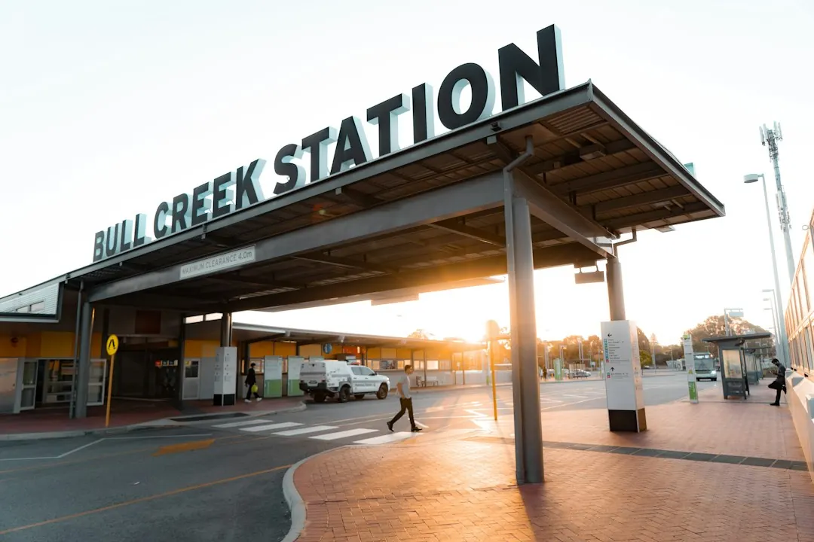

A suitable home charging setup depends on the vehicle connection, the charger's charging rate, where the car parks and the electrical capacity available at the property. The switchboard and wiring need assessment before installation, and the quote should separate the charger from cable work or upgrades. Testing, charger setup, controls, documentation and any agreed workmanship warranty should also be included in the final scope.
For households comparing ev charging stations perth options, the practical decision comes down to the car's charging limit, the parking position, available electrical capacity and the work required to connect them.
Ev Charging Stations Perth Explained
The EV Charger Installation Perth guide begins with the place where the vehicle will charge, because the distance from the switchboard to the parking space affects the cable route and installation work. A charger already purchased still needs to suit both the car and the circuit supplying it.
Before asking for a quote, record where the vehicle normally sits, whether access follows an internal or external route, and whether walls or other surfaces may need opening. In an apartment or shared parking area, check whether the allocated bay relies on common property and whether a cable route crosses a shared driveway. Those details can affect the practical installation method and the approvals that need to be discussed.
- Identify the regular parking bay and the nearest practical cable route.
- Note access restrictions, shared areas and anything close to the proposed route.
- Keep the charger model and vehicle connection details available for assessment.
Match charging equipment to the property
The vehicle, charger and electrical supply have to work as one system. The car's charging limit helps determine what equipment is useful, while the home's spare capacity determines whether the circuit can support the extra demand alongside appliances already running.
AC equipment supplies power that the vehicle converts for its battery. DC equipment performs that conversion outside the car. Faster charging therefore depends on the equipment, the vehicle and the electrical power the property can provide, rather than on the charger label alone.
Solar charging adds another question. Compatible controls can use surplus rooftop generation after household demand is met, while load management can reduce charger draw when appliances need power. Scheduling and electricity-use tracking may also be available through compatible chargers or software, so ask which functions belong to the equipment being considered.
| Option | Useful question | Property detail to check |
|---|---|---|
| Home AC charging | What charging rate can the vehicle use? | Switchboard capacity and cable route |
| Solar-assisted charging | Can controls respond to surplus generation? | Household demand and rooftop generation |
| Faster or workplace charging | How long do vehicles remain parked? | Available electrical capacity and usage pattern |
Treat the electrical assessment as part of the quote
A useful quote separates the charger from the work needed to connect it. Installation cost depends on access, the cable run and any electrical upgrades identified at the property. A short, straightforward route and a longer route through difficult access conditions can represent different amounts of work even when the same charger is used.
The switchboard and wiring assessment establishes how much additional demand the home can carry. Some installations may work with suitable charging controls, while others may require electrical upgrades. The assessment should explain which issue has been identified, what work is proposed and whether the charger itself is included or supplied separately.
Ask for these items in writing:
- the charger model and connection arrangement;
- the proposed cable route and access assumptions;
- any switchboard or wiring work considered necessary;
- testing, setup and demonstration of the charger controls;
- the documentation supplied after completion; and
- any support arrangements or workmanship warranty included in the agreed scope.
Use the right process for apartments and workplaces
Apartment charging is not only an equipment choice. The allocated bay, shared power capacity and individual energy use all need to be considered. Approval may be needed where the installation uses shared property, and a route across a common driveway must account for continued access through that space.
Workplace and fleet charging is shaped by vehicle movements. When vehicles return and how long they stay parked help determine whether the setup should prioritise overnight charging, repeated daytime use or a faster charging arrangement. The available electrical capacity can limit either AC or DC equipment.
For a home, apartment or workplace review, provide the suburb or postcode if useful, the parking arrangement, the vehicle details, the charger already owned or being considered, and any concern about available power. This gives the electrician the information needed to discuss the installation position and supply before equipment is fixed in place.
For a related local perspective on installation planning, see the Perth charger installation planning guide.
Know what happens after installation
Completion is more than mounting equipment. The agreed installation needs electrical testing and charger setup, followed by an explanation of the controls and the documentation supplied for the work. Confirm how support questions, repairs and any workmanship warranty will be handled.
Repeated charger errors should be investigated before replacing the unit. The cause may involve the equipment, its settings or the electrical supply, so diagnosis helps distinguish a charger problem from a connection or property issue.
Before everyday charging begins, confirm that the charger starts correctly, the controls are understood and the final scope matches the work completed. If the vehicle, charger or property changes later, ask whether the existing circuit and controls remain suitable rather than assuming the original arrangement covers the new demand.
- Describe the parking space. Give the parking position, access conditions and likely cable route, including any shared areas.
- List the equipment. Provide the vehicle details and the charger model already owned or being considered.
- Request the supply assessment. Ask the electrician to assess the switchboard, wiring and additional charging demand.
- Review the quote. Check that the charger, cable work, possible upgrades, testing and setup are separated clearly.
- Confirm completion support. Ask what documentation, control demonstration, support arrangements and workmanship warranty are included.
| Decision | What to compare | What to confirm |
|---|---|---|
| Vehicle compatibility | Connection and charging limit | The equipment suits the car |
| Property supply | Switchboard, wiring and spare capacity | Controls or upgrades needed |
| Installation work | Access and cable distance | Route, testing and documentation |
| Charging use | Home, solar, apartment or fleet pattern | Parking time and shared-property requirements |
Common questions
Can an existing switchboard support a home charger? It may support the charger without an upgrade, but capacity needs an electrical assessment. Charging adds demand alongside appliances already operating, and load management may reduce the charger's draw where available power is limited.
Does a charger I already own still need checking? Yes. The charger needs to suit the vehicle and the circuit supplying it. Its installation position, cable route and the property's available electrical capacity also need assessment.
What affects installation cost? Access, the distance between the switchboard and parking space, the cable route and any electrical upgrades affect the work involved. A useful quote identifies those items separately from the charger.
What is different about apartment charging? The allocated bay, shared power capacity, individual energy use and access through common property all need consideration. Approval may be required where the installation uses shared property.
Should repeated charging errors lead straight to replacement? No. Repeated errors need diagnosis first because the cause may involve the equipment, its settings or the electrical supply. An electrician can investigate the issue and explain repair options.
What should happen after the charger is installed? The completed installation should be electrically tested and the charger set up. The electrician can demonstrate the controls and explain the documentation supplied for the work.
This guide covers charger selection, parking, electrical capacity, quoting, shared-property considerations and post-installation checks in Perth and surrounding suburbs.